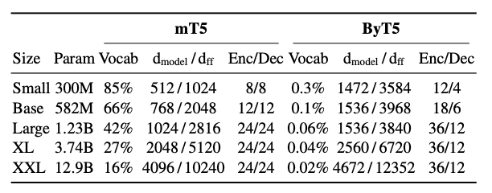

ByT5: Towards a token-free future with pre-trained byte-to-byte models#

The ByT5 model was presented in [Xue et al., 2022].
The abstract from the paper is the following:
Most widely-used pre-trained language models operate on sequences of tokens corresponding to word or subword units. Encoding text as a sequence of tokens requires a tokenizer, which is typically created as an independent artifact from the model. Token-free models that instead operate directly on raw text (bytes or characters) have many benefits: they can process text in any language out of the box, they are more robust to noise, and they minimize technical debt by removing complex and error-prone text preprocessing pipelines. Since byte or character sequences are longer than token sequences, past work on token-free models has often introduced new model architectures designed to amortize the cost of operating directly on raw text. In this paper, we show that a standard Transformer architecture can be used with minimal modifications to process byte sequences. We carefully characterize the trade-offs in terms of parameter count, training FLOPs, and inference speed, and show that byte-level models are competitive with their token-level counterparts. We also demonstrate that byte-level models are significantly more robust to noise and perform better on tasks that are sensitive to spelling and pronunciation. As part of our contribution, we release a new set of pre-trained byte-level Transformer models based on the T5 architecture, as well as all code and data used in our experiments.
What Is A Token In Machine Learning?#
A token is a sequence of characters that is considered as a single entity during processing.
Tokens are usually derived from words, but they can also be derived from subwords, characters, or even bytes.
For example, the sentence “The quick brown fox jumps over the lazy dog” can be tokenized into the following tokens: [“The”, “quick”, “brown”, “fox”, “jumps”, “over”, “the”, “lazy”, “dog”].
Some words can be tokenized into multiple tokens, for example, “don’t” can be tokenized into [“do”, “n’t”].
At the byte or chracter level, the sentence can be tokenized into the 43 character tokens.
In transformer models, tokens are usually represented as vectors of fixed length, for example, 512-dimensional vectors to limit the cost of computation.
Attention mechanisms are expensive, and the cost of computation increases with the order of \(N^2\) where \(N\) is the number of tokens in the sequence.
This explains why tokenization is important, it dramatically reduces the number of tokens in a sequence, and thus the cost of computation.
What Is ByT5?#
ByT5 is a token-free model that operates directly on raw text (bytes or characters).
Therefore, it does not require a tokenizer, and it can process text in any language out of the box.
One advantage of token-free models is that they are more robust to noise.
Also, out-of-vocabulary words are not a problem for token-free models. It is
<UNK>-free.<UNK>is the token used to represent out-of-vocabulary words in token-based models.The proposed ByT5 is based on Google’s recent token-based mT5 (Massively Multilingual Text-to-Text Transfer Transformer)

Key Changes To the mT5 Architecture#
Feeding UTF-8 bytes of the SentencePiece vocabulary directly to the embedding layer without any text preprocessing.
An additional 3 IDs are reserved for the special tokens: padding, end-of-sequence, and an unused token.
The team then modifies the pretrained task such that instead of adding 100 new tokens for the sentinels, they reuse the final 100 byte IDs.
Rather than using an average span length of 3 subwords, they mask longer byte-spans with a mean length of 20 bytes.
They found that byte-level models with a heavier encoder perform better on both classification and generation tasks.
They dropped any illegal bytes in the model’s ouput to keep the output valid UTF-8.
How Tokens Are Used#
The mT5 tokens are much shorter than the ByT5 tokens because every character is a token in ByT5.
The model is designed to remove \(n\) tokens from the input and replace with placeholder tokens.
The encoder is given the content with the sets of tokens missing and the placeholder to understand where the tokens are missing.
The decoder is given the missing tokens and the placeholder assigned to the content that is hidden to it.
Essentially, the encoder knows the content with the tokens missing and the decoder knows the missing tokens.
On training, accuracy is measured by how well the decoder can predict the missing tokens.
Accuracy of 80% means that the decoder can predict 80% of the missing tokens correctly.

The Technical Details#
“We release ByT5 in five sizes analogous to T5 and mT5 (Small, Base, Large, XL, XXL). We aim for ByT5 to cover the same use cases as mT5: it is a general-purpose pre-trained text-to-text model covering 100+ languages. We expect ByT5 will be particular useful for tasks operating on short-to-medium length text sequences (a few sentences or less), as these will incur less slowdown in fine-tuning and inference.”
There are five sizes of ByT5 models covering 100+ languages.
The prediction is that ByT5 will be better for tasks operating on shorter text sequences.
A marginally better model that takes 100x more time to train and run is not a good trade-off.
ByT5 requires ~5x more tokens for the same text length compared to mT5.
“Second, we modify the pre-training task. mT5 uses the “span corruption” pre-training objective first proposed by Raffel et al. (2020) where spans of tokens in unlabeled text data are replaced with a single “sentinel” ID and the model must fill in the missing spans. Rather than adding 100 new tokens for the sentinels, we find it sufficient to reuse the final 100 byte IDs. While mT5 uses an average span length of 3 subword tokens, we find that masking longer byte-spans is valuable.”
mT5 replaces 3 tokens with a sentinel token.
ByT5 replaces 20 bytes with a sentinel token.
“Third, we find that ByT5 performs best when we decouple the depth of the encoder and decoder transformer stacks. While T5 and mT5 used “balanced” architectures, we find byte-level models benefit significantly from a “heavier” encoder. Specifically, we set our encoder depth to 3 times that of the decoder.”
mT5 used balances architectures with the same number of layers in the encoder and decoder.
ByT5 uses a heavier encoder with 3 times the number of layers as the decoder.
The Pros And Cons Of ByT5#
Pros#
In a model with a large vocabulary, the vocaboulary matrix can take up a substantial proportion of the model’s parameters.
Vocabulary of mT5 takes up 85% ~ 16% of the model’s parameters depending on the model size.
By switching to a byte-level model, the saved parameters can be used for other purposes, such as adding more layers or making the layers wider.

Cons#
Byte-level sequences are much longer than token-level sequences, and this increases the cost of computation.
If the decoder is particularly large, autoregressive sampling can be expensive.
In terms of FLOPs (floating-point operations per second), ByT5 requires ~1.2x more operations for the pre-training.
On word-level tasks, ByT5 is fairly competitive with mT5.
On tasks with longer input sequences, the slowdown is more pronounced.

The Results#
“ByT5 is competitive with mT5 on standard English and multilingual NLP benchmarks and outperforms mT5 at small model sizes. Additionally ByT5 excels on free-form generation tasks and transliteration.”
English Classification Tasks (GLUE, SuperGLUE)#
ByT5 outperforms mT5 on small and base model sizes by sizable margins, and loses close battles on larger models.

English Generation Tasks (XSum, TweetQA, DROP)#
XSum gets the model to summarize a news article in a single sentence, and TweetQA is question answering from Tweets. DROP is a challenging reading comprehension task that requires numerical reasoning.
ByT5 outperforms mT5 on all three tasks across all model sizes.

Cross-lingual Benchmarks#
Changes to vocabulary and tokenization are likely to affect different languages in different ways.
On the most realistic in-language setting, where some gold training data is available in all languages, ByT5 surpasses the previous state-of-art mT5 on all tasks and model sizes.
One might expect languages with rich inflectional morphology (e.g. Turkish) to benefit most from the move away from a fixed vocabulary.
Languages with a higher SentencePiece token compression rate (e.g. Thai and Telugu) tend to favor mT5, whereas those with a lower compression rate (e.g. Indonesian and Vietnamese) tend to favor ByT5.

Word-Level Tasks#
Unsurprisingly, “characteraware” models excel on tasks around word-internal phenonema.
These core NLP tasks have often been overlooked in evaluating general-purpose NLP models.

Experiments on Synthetic Noise#
The authors test six types of noise on the model:
Drop: Each character has a 10% chance of being dropped.
Add/Drop/Mutate: At each character position, there is a 10% chance of applying one of three actions, with equal likelihood: Add (inserts a random character from the input), Drop (deletes this character) or Mutate (replaces this character with a random character from the input).
Repetitions: Each character has a 20% chance of being selected for repetition. If selected, 1–3 repetitions (with equal likelihood) are appended after the original character.
Antspeak: Each character is capitalized and padded with spaces. For example, “abc def” becomes “ A B C D E F ”.
Uppercase: Each character is converted to uppercase. Here, we restrict to languages whose scripts distinguish case (for XNLI: Bulgarian, English, French, German, Greek, Russian, Spanish, Swahili, Turkish, Vietnamese; for TyDiQA-GoldP: English, Finnish, Indonesian, Russian, Swahili).
Random case: Each character is set to a random case (upper or lower). Again, only languages whose scripts distinguish case are considered.
Results#
Character-level models are more robust to real and synthetic noise than BPE or word-based models, across a range of morphological, syntactic and semantic tagging tasks.
Token-free models are more robust to noise across many tasks.

Ablation Study#
“ByT5 outperforms mT5 in any of these four scenarios: (1) at model sizes under 1 billion parameters, (2) on generative tasks, (3) on multilingual tasks with in-language labels, and (4) in the presence of various types of noise.”
“… the gains we observe with ByT5 are achieved despite the fact that the model is pretrained on 4 times less text than mT5. This suggests that byte-level models could be more data efficient learners.”
“Our “hands-off” approach of feeding raw UTF-8 bytes directly into the transformer costs +33% pre-training time, as well as longer inference time (10–50% longer for small models, and 100–600% longer for our largest models). As such, there is significant room for improvement. We believe techniques such as hash embeddings, local attention and down-sampling (Clark et al., 2021), as well as sparse computation (Fedus et al., 2021) can help address latency issues, removing the remaining barriers to a token-free future.”
Conclusion#
While ByT5 takes longer to train, and underperforms in some tasks (zero-shot translation for example) the payoff for tasks where noise is an issue (think social and voice) is significant.
Token-free models and token-based models can coexist, and the best model for a given task will be assigned based on the task’s characteristics.
Token-free models will likely dramatically enhance voice search technologies where noise is prevalent.
Token-free models could collect information from noisy environments and to more quickly learn new terms being used as shorthand, slang, or jargon, and even emojis.
These information could be used to improve the performance of token-based models.